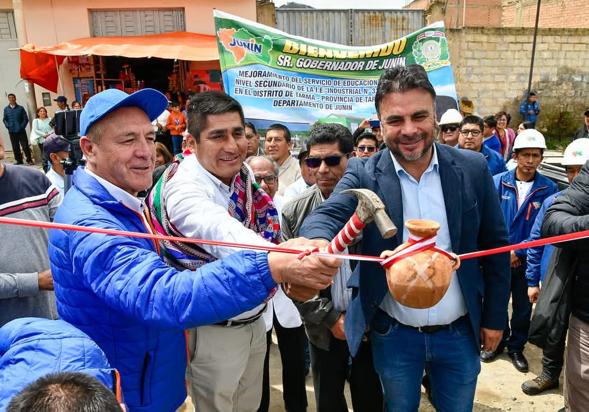

LUCHA CONTRA EL DENGUE: PREVENCIÓN EN SELVA CENTRAL
Con el lema “Hechos y no palabras”, los pobladores y representantes de las comunidades campesinas de la provincia de Tarma y zonas altoandinas expresaron su agradecimiento por la entrega de títulos de propiedad. Esta iniciativa, promovida por el gobernador Zósimo Cárdenas, impulsa la inversión en mejoras agrícolas, facilita el acceso a créditos y fortalece la cohesión local.

ALUMNOS DE TARMA CON MODERNO PLAN DE CONTIGENCIA
El emblemático colegio San Ramón de Tarma cuenta ahora con un moderno Plan de Contingencia que garantiza todos los servicios básicos, con una inversión superior a los 7 millones de soles. Estos nuevos ambientes brindarán espacios confortables a 2,000 alumnos mientras se construye la obra principal a cargo de ATS SAC
OBSERVATORIO REGIONAL DE JUNIN DEFINE PLAN 2025
El Observatorio Regional de la Violencia contra las Mujeres y los Integrantes del Grupo Familiar es una herramienta vital para recopilar y difundir información precisa que permita combatir la violencia de género en la región. Este jueves 19 de diciembre se realizará la última sesión del Consejo Directivo del año 2024, para evaluar el cumplimiento del Plan de Trabajo 2024, aclarar dudas e interrogantes, y proyectar el Plan de Trabajo 2025.
2025: AÑO CLAVE PARA LA REVOLUCIÓN AGRARIA CON MÁS PRESUPUESTO
Con el lema “Hechos y no palabras”, los pobladores y representantes de las comunidades campesinas de la provincia de Tarma y zonas altoandinas expresaron su agradecimiento por la entrega de títulos de propiedad. Esta iniciativa, promovida por el gobernador Zósimo Cárdenas, impulsa la inversión en mejoras agrícolas, facilita el acceso a créditos y fortalece la cohesión local.